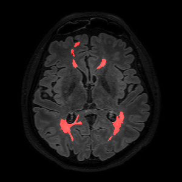

Jesse Knight
MASc Candidate
Image Analysis in Medicine Lab
University of Guelph
Current Projects

WML Segmentation
White matter lesions (MWL) have been correlated with Multiple Sclerosis, Alzheimer's Disease, stroke risk, and other neurodegeneration. Currently, WMLs are outlined manually, but we aim do develop a fully automatic WML segmentation algorithm which uses FLAIR MRI alone.
Website
This thing here! Built with help from W3 Schools, Foundation, and some custom python backend.